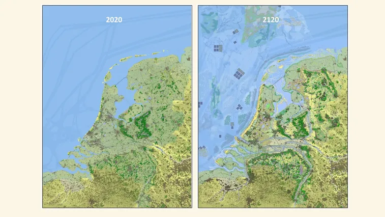

Wij dachten dat als je op paalhuizen staat dat dat handig is
voor als de zeespiegel stijgt, dan denken wij dat je makkelijker aan zee kunt blijven leven.
en wij dachten dat als je in de zee planten gaat kweken dan zou je ook planten kunnen gaan eten
en daarmee haal je voeding uit zout water.en we hadden het idee om huizen duurzamer te maken
door bijvoorbeeld grond op het dak te leggen of het te beschutten of latten beschutten.
Hier is een plaatje van hoe het in 2020 eruit ziet en hoe het er honderd jaar later uit ziet
